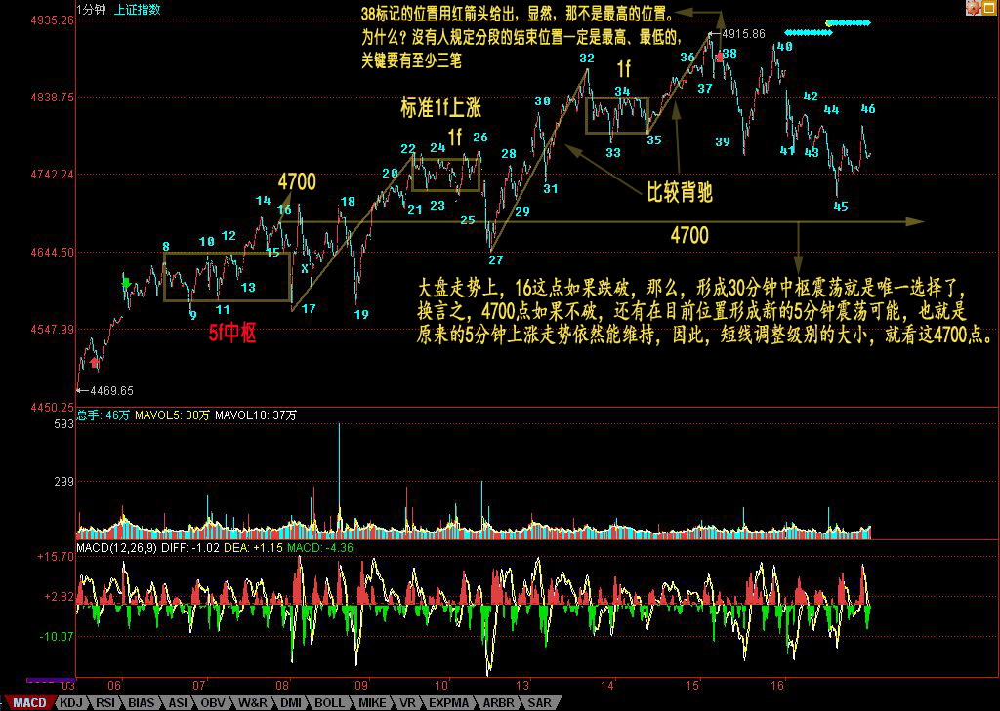
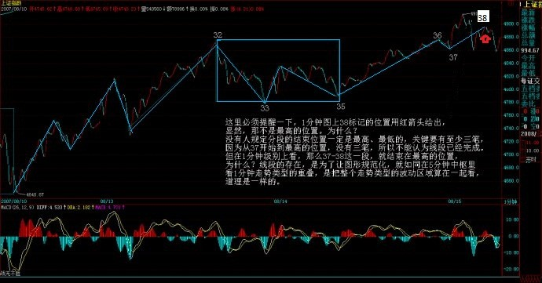
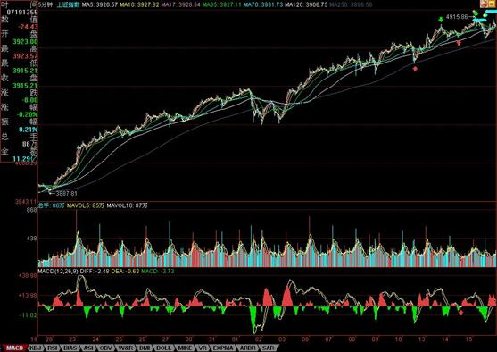
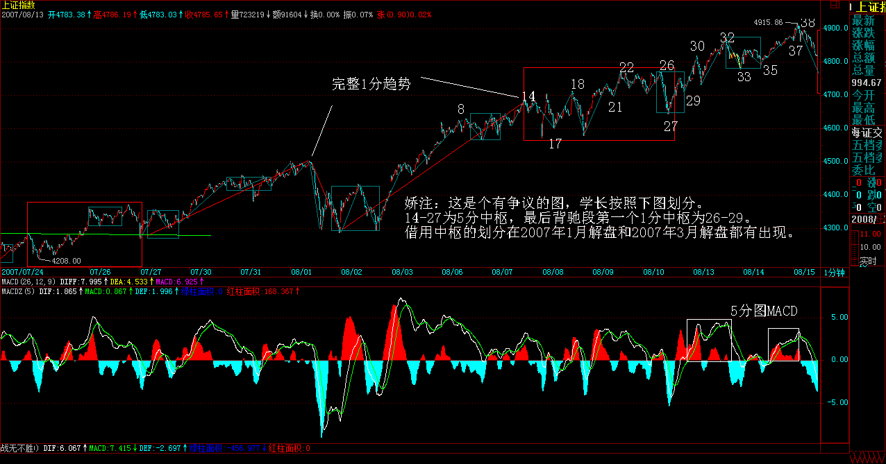
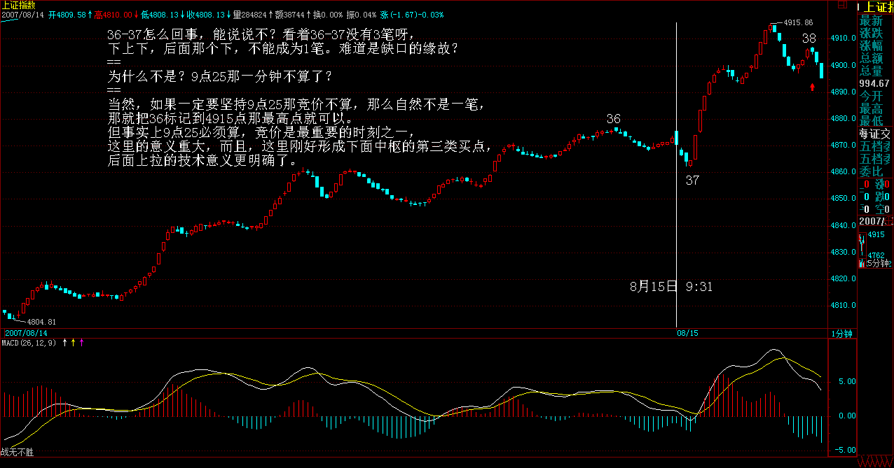
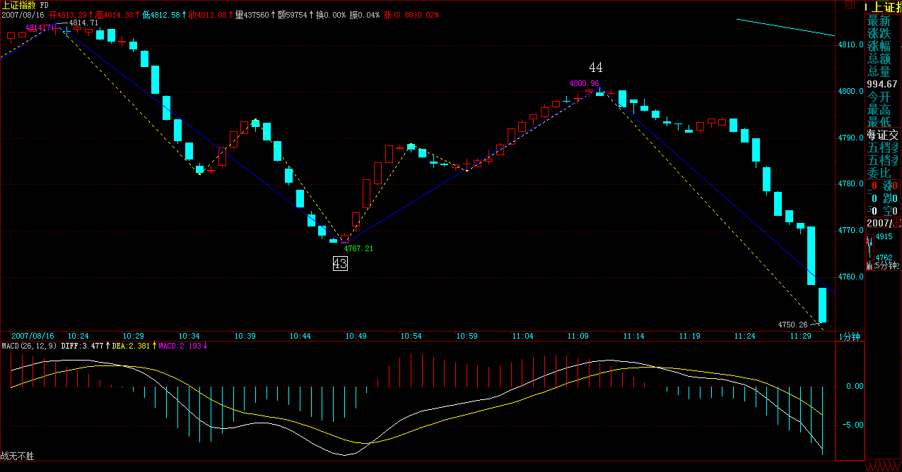

|
 |
教你炒股票70：一个教科书式走势的示范分析
（2007-08-15 22:41:35)
首先，今天下午太匆忙，37后就直接标记39，晚上回来才发现，已经改过来。
在前面的课程里，本ID反复说过，结合律是至关重要的。这里的人，认真学过抽象代数的人少，所以不大明白运算规则的选择对研究对象的决定性意义。对于走势来说，结合律就是连接走势之间关系最重要的规则，不深切明白这一点，如何能明白走势本身？
无论如何结合，本ID的理论对走势的分析原则是不变的。可以这样认为，本ID的理论，就是走势保持结合律下具有变换不变性的一套理论，而且可以严格地证明，是唯一能保持分解变换不变且保持结合律的一套理论。如果有点现代数学常识，对这理论的意义应该能多点了解。
这几天，随着走势的当下发展，本ID不断变换着所看的中枢，这根本的原因就在于结合律，因为结合律，我们可以对走势进行最有利观察的分解，这样，才能更容易明白走势究竟在干什么？
例如，到今天，走势一种最明显的划分已经自动走出来，就是8-17构成5分钟中枢，该中枢是4300点那个5分钟中枢上来后的一个新的5分钟中枢，这个中枢，在刚形成时，我们已经指出，而且任何学过本ID理论的，都可以当下指出。一般来说，形成这个5分钟中枢后，在理论上只有三种走势：（娇：中枢延伸，新生，扩张）
1：向上出现第三类买点，走出1分钟向上走势类型，然后构成新的5分钟中枢；
(娇注：此3买为同级别分解3买，包含在1分走势中。）
2、向下出现第三类卖点，走出1分钟线向下走势类型，构成新的5分钟中枢。
3、中枢延伸，或出现第三类买卖点后扩展成大级别的30分钟中枢。
显然，在行情发展中，没必要去预测走势选择什么，走势自然选择，只需要观察着就可以。现在，走势自然选择了第一种，为什么？因为17-38构成完美的1分钟上涨走势，目前，围绕这1分钟上涨走势的最后一个1分钟中枢32-35，正扩展出新的5分钟中枢的雏形。
这个5分钟中枢，最终至少要完成的，至于是否继续扩展出大的30分钟中枢，还是出现新5分钟中枢的第三类买点继续上涨，再形成新的5分钟中枢，这无须预测，与8-17那5分钟中枢一样对待，如此而已。
那么，如果是按30分钟操作的，这些5分钟的中枢移动、震荡之类的活动根本无须理睬，只要看明白就是，根本无须操作；如果是按5分钟级别操作，那么就是不参与大于5分钟级别的震荡，那么就等5分钟上涨出现背驰后走人；如果是按1分钟级别操作，那么今天早上就该先走，为什么？因为1分钟的上涨出现背驰，按照本ID的理论，后面必然回抽到最后一个1分钟的中枢之内，从而至少形成一个新的5分钟中枢。然后根据5分钟震荡的走势进行回补就可以。
注意，按照多样性分解原则，新的5分钟中枢，暂时先从最后一个1分钟中枢开始算起，后面的操作先以此为准，等走势走出最自然的选择再继续更合理的划分。按照这暂时的划分，并不影响任何操作，5分钟中枢该怎么操作就怎么操作，如此而已。

(注：38处的背驰禅师这里的论述为17-38 1分趋势背驰。后面的论述为38处为5分趋势背驰，1分趋背区间套）
在今天的背驰判断中，关键是知道哪一段相比，显然，27-32与35-38这两段去比。而实际的对比中，看1分钟图，去加两段对应的那些MACD，太麻烦，所以可以看5分钟图。这里，把5分钟图给放上来了，图上，相应对比的两段已经标记出来，下面MACD的红箭头，对应是回抽那一下，对应走势，就是最后一个1分钟中枢形成的时候，前面两段的对比，极为教科书，请好好揣摩。
其实，只要基本概念明确，这些分析，在当下都不是什么难事。这里必须提醒一下，1分钟图上38标记的位置用红箭头给出，显然，那不是最高的位置。为什么？没有人规定分段的结束位置一定是最高、最低的，关键要有至少三笔，因为从37开始到最高的位置，没有三笔，所以不能认为线段已经完成。但在1分钟级别上看，那么37-38这一段，就结束在最高的位置，为什么？线段的存在，是为了让图形规范化，就如同在5分钟中枢里，看1分钟走势类型的重叠，是把整个走势类型的波动区域算在一起看，道理是一样的。

1分钟图
5分钟图


每日解盘(2007-08-15 15:49:33)
全球化，没有市场可与世隔绝
(2007-08-16
15:41:56)
“全球化社会里，没有哪个股市是可以与世隔绝的。”是在本周一的公募基金经理“快男”发展模式的不可持续 上写的，主要是针对八月股市的分析。现在的问题，已经很明确了，还是该文章里说的，要注意月线上影的杀伤力。
当然，没必要预测这个问题，而且本ID从来都认为，美国的事情对中国的影响从来都是战略性的，中美游戏，只看最后结果，中间都是游戏而已。就像原来的蒋委员长，最终只得了个蒋匪而看海水之蓝终老，谁能把美国搞成美匪，显然更牛于将蒋委员长搞成蒋匪。
美国暴风雨，全世界陪着挨冻，但至少今天的中国散户，很多都没这种感觉。为什么？因为二、三线股被热点蔓延了。本ID从上周起，反复用到的就是蔓延这个词，这确实是一个度过风雨时节的好办法，搞工行的被美国搞了，现正痛苦中，那些到香港QDII的，终于知道全世界的乌鸦一般黑了。而这里的二、三线股的火，能否温暖这风雨之夜，就看明天和周一了。
全球化，没有市场可与世隔绝，但可以创造与世隔绝的板块，二、三线股，本来就是给点烛光都能灿烂，关键是，如果烛光都不能给，有点光就把投机大帽子盖上，那就瞎闹了。那些二、三线股一动就忽悠投机的，脑子里肯定水太多。当然，现在不比上半年，这二、三线股之火能否燎原，还真不好说，走着瞧吧。
大盘走势上，16这点如果跌破，那么，形成30分钟中枢震荡就是唯一选择了，换言之，4700点如果不破，还有在目前位置形成新的5分钟震荡可能，也就是原来的5分钟上涨走势依然能维持，因此，短线调整级别的大小，就看这4700点。
这，关键还是要看美国这病人还要鬼哭狼嚎几天了，说实在，本ID是宁愿中国这边30分钟甚至日线震荡，也希望看到美国哭个368天算了，为阿富汗、伊拉克死难的人，美国人多些破产，难道不应该？
今天心情大好，看到美国暴跌就开心，虽然会让汉奸不爽，但汉奸不爽的事情，本ID最愿意干。
今天回答问题到5点，因为开心。
注意，下图中的46并不百分百确定，因为如果明天大幅度高开，那就要改变了，这只是大致标记上。
缠中说禅 2007-08-13 21:56:16
缠中说禅：
2007-08-16
15:50:48 [举报]
[匿名] 新浪网友 删除此人所有评论
缠中说禅：
2007-08-16 15:51:35 [举报]
[匿名] 新浪网友 删除此人所有评论 缠中说禅：
缠中说禅：
2007-08-16
16:04:18 [举报]
注意：
缠中说禅：
2007-08-16
16:08:05 [举报]
[匿名] 新浪网友 删除此人所有评论
缠中说禅：
2007-08-16
16:16:47 [举报]
[匿名] 听风 删除此人所有评论 缠中说禅：
2007-08-16
16:25:02 [举报]
石头叁 删除此人所有评论 缠中说禅：
2007-08-16
16:29:29 [举报]
[匿名] 沙滩 删除此人所有评论 缠中说禅：
2007-08-16
16:34:13 [举报]
[匿名] christine 删除此人所有评论 缠中说禅：
2007-08-16
16:35:57 [举报]
[匿名] 新浪网友 删除此人所有评论

缠中说禅：
2007-08-16
16:41:04 [举报]
潺缠禅 删除此人所有评论 缠中说禅：
2007-08-16
16:44:08 [举报]
[匿名] 大盘 删除此人所有评论  ======== 缠中说禅：
2007-08-16
16:46:08 [举报]
本ID把课程里两种情况的论述复制过来，各位请好好研究：
缠中说禅：
2007-08-16
16:54:24 [举报]
石头叁 删除此人所有评论 缠中说禅：
2007-08-16
16:59:27 [举报]
[匿名] 夜雨 删除此人所有评论 |
|
|
|